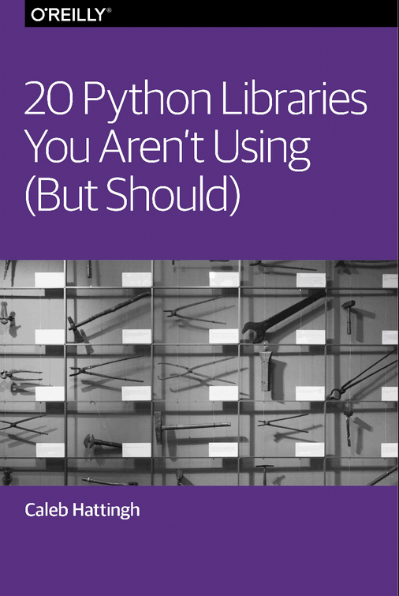

Akash Singh
Mathematician, Designer & Developer

< class="info">
20 Python Libraries You Aren't Using!
Author: Akash Singh
Date: December 20, 2019
I have been using Python for quite a while now, still learning a lot of simple and new things. Sometimes these simple things saves time and bring a lot of joy to me. I will be sharing a breif overview of the book:
20 Python Libraries You Aren't Using (But Should)- Caleb Hattingh
This book primarily focuses on some of the lesser-known libraries from the third-party ecosystem.
- Libraries
- collections.OrderedDict: gives you a dict that maintains the order of insertion.
- collections.defaultdict: allows you to specify a default value to all new keys. For example:
>>> import collections
>>> d = collections.defaultdict(list)
>>> d['random_key']
[] # output -> auto-initilized to list
>>> point = (1.0, 2.0)
>>> from collections import namedtuple
>>> point_using_named_tuple = namedtuple('Point', 'x_axis, y_axis')
>>> point_tuple = Point(x_axis=1.0, y_axis=2.0)
>>> point_tuple.x_axis
1.0
@contextmanager